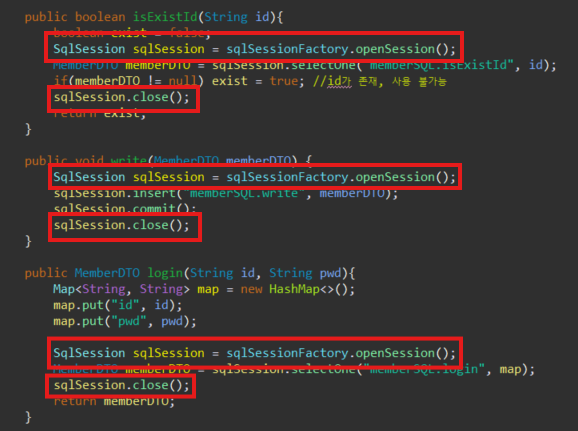
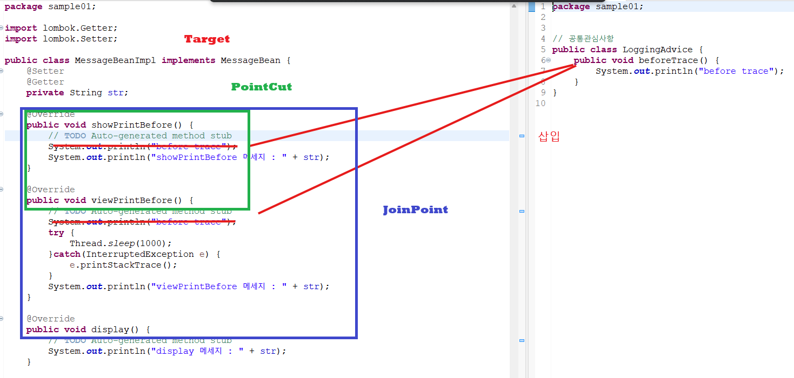

AOP란?
- 애플리케이션의 핵심 기능과 부가 기능을 분리하고, 부가 기능을 Aspect라는 모듈로 관리하는 개발 방식이다.
- 중복되는 공통 코드는 핵심 메서드 안에 반복 작성하지 않고, 필요한 지점에 삽입해 사용한다.
Aspect = Advice + Pointcut
- Advice: 언제/어떻게 부가 기능을 넣을지 (Before, After, Around 등)
- Pointcut: 어떤 대상/지점에 적용할지

photo/posts/Backend/Spring/AOP/AOP1.png중복되는 공통 코드를 분리해두고, 각 핵심 로직 실행 지점에 결합해 재사용하는 구조다.

photo/posts/Backend/Spring/AOP/AOP2.png스프링 AOP의 주요 구성 요소
-
Target
- 핵심 비즈니스 메서드를 가진 대상 클래스
- 부가기능이 적용될 실제 객체
-
Advice
- 부가기능 자체를 담은 모듈
- 핵심 로직에 언제 적용할지 정의
- 예:
Before,After Returning,After Throwing,Around
-
JoinPoint
- Advice가 적용 가능한 지점
- Spring AOP에서는 기본적으로 메서드 실행 지점 중심으로 동작
-
Pointcut
- 여러 JoinPoint 중에서 실제 적용 대상을 선별하는 규칙
-
Proxy
- Target 앞단에서 부가기능을 실행하는 대리 객체
- 클라이언트는 보통 Target 대신 Proxy를 호출
-
Advisor
Advice + Pointcut을 묶은 단위
-
Aspect
- 관점 모듈, 실무에서는 Advice와 Pointcut을 모아 정의한 클래스(예:
@Aspect)
- 관점 모듈, 실무에서는 Advice와 Pointcut을 모아 정의한 클래스(예:
-
Weaving
- Advice를 핵심 로직에 연결(적용)하는 과정
- Spring AOP는 런타임 프록시 기반으로, 메서드 호출 시점에 적용된다.
요약
- 핵심 코드와 공통 코드를 분리해 코드 중복을 줄인다.
- 공통 코드를 한 곳(Aspect)에서 관리하므로 변경 지점이 줄어든다.
- 스프링은 프록시 기반 AOP로 메서드 실행 지점에 부가기능을 끼워 넣는다.